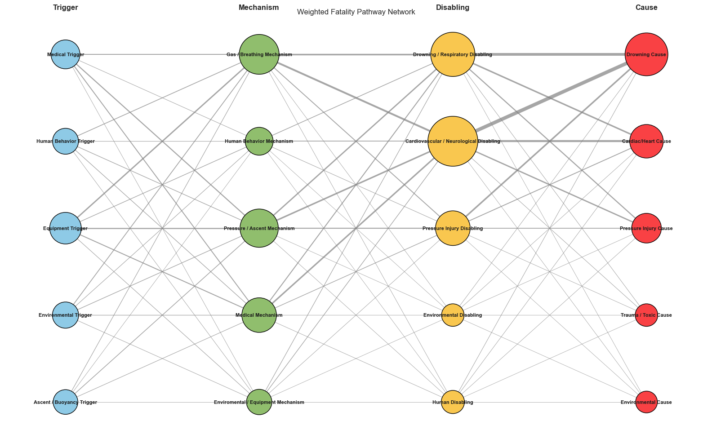
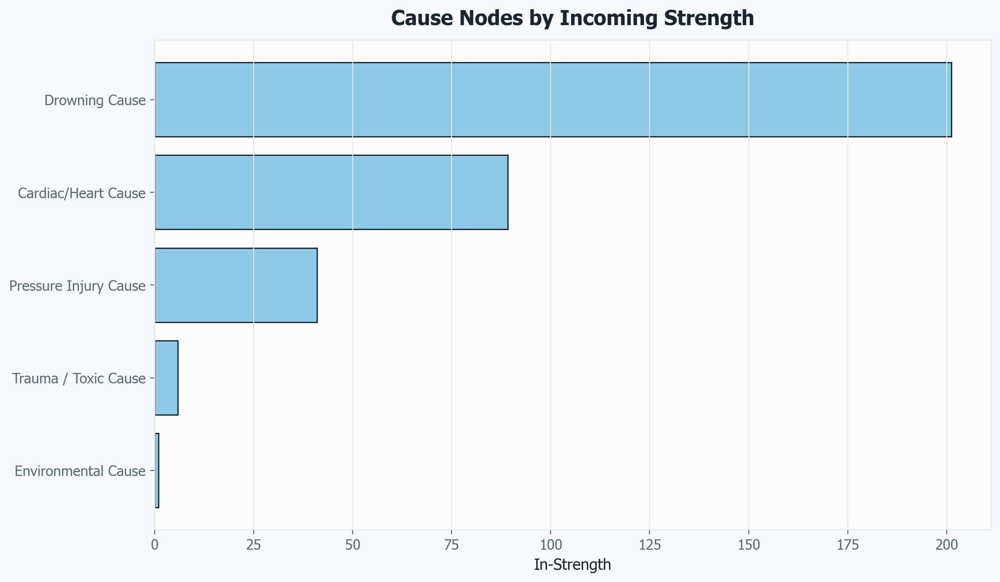
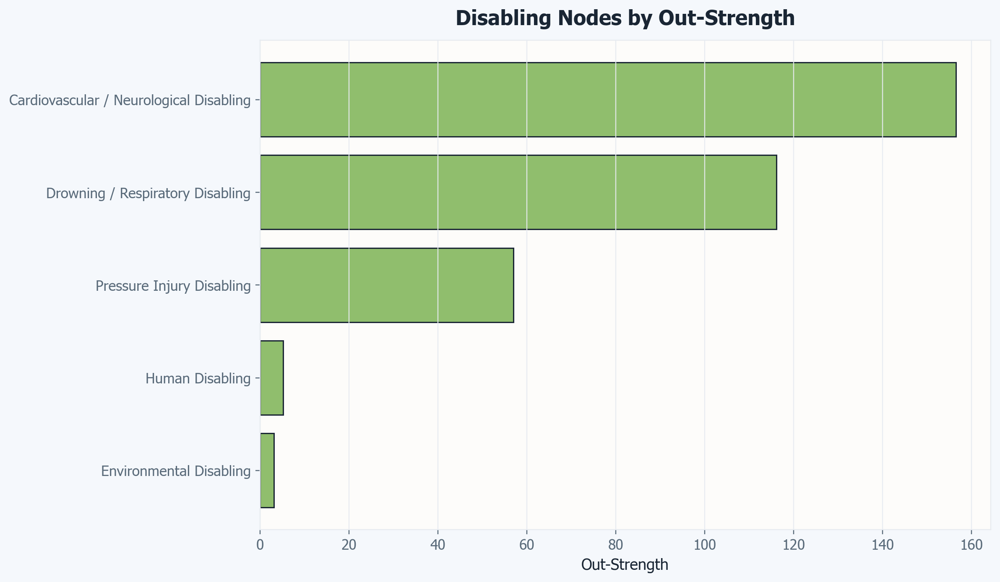
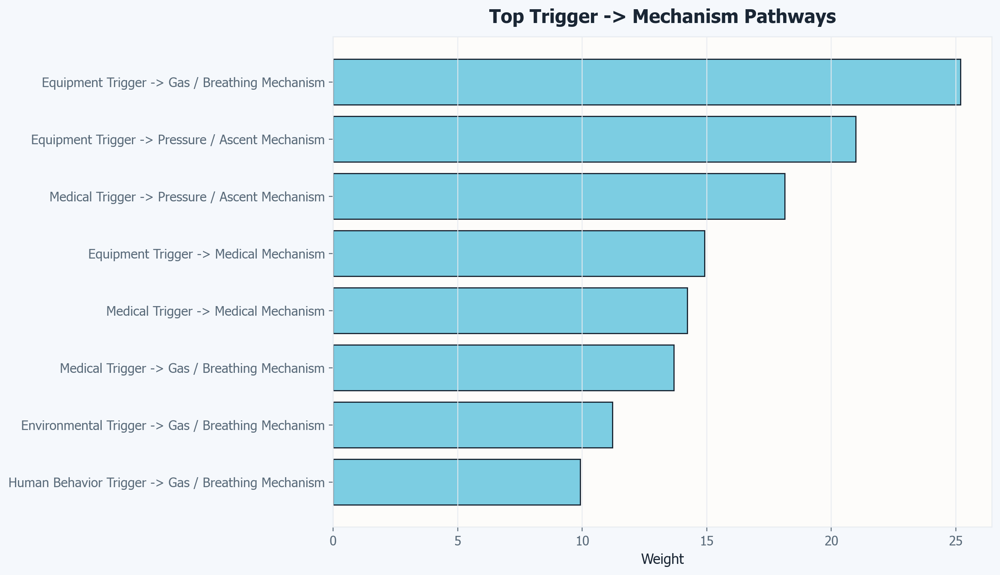
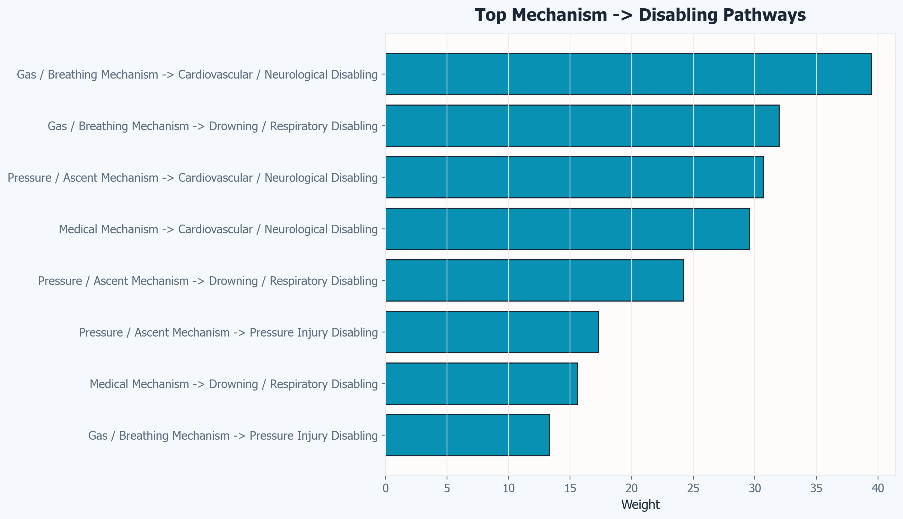
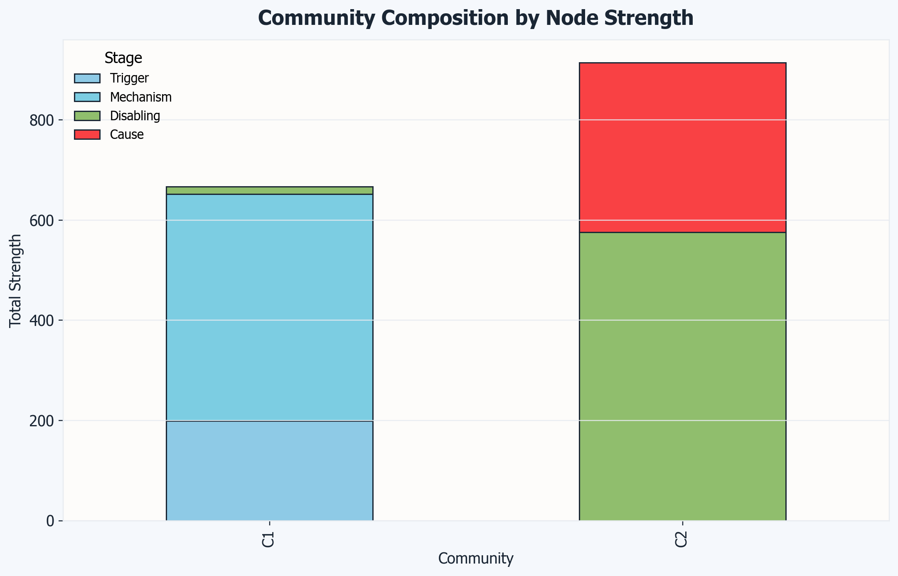
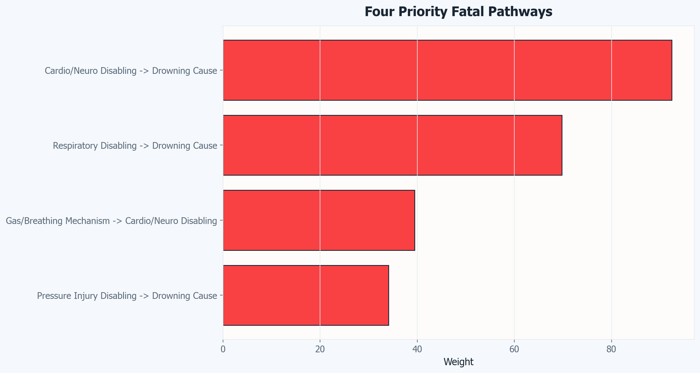
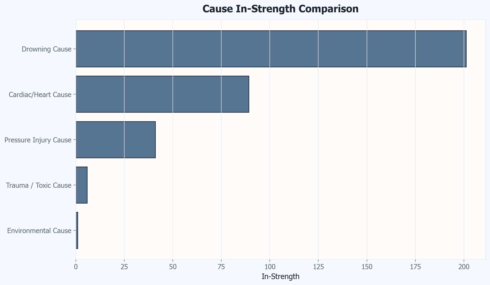

Regional and Country Patterns
The regional proportion analysis shows that fatalities are not evenly distributed across regions and that the regional composition changes over time. In several years, one region accounts for a large share of annual fatalities, while secondary regions shift in relative contribution. This suggests that year-specific context likely influences the annual distribution.
Country-level results show strong concentration among a small number of countries. The top-10 country trend chart indicates that one country consistently contributes the largest share of recorded fatalities, while the remaining top countries fluctuate more moderately from year to year.
Depth Findings
The maximum-depth analysis indicates that fatalities are most common in shallow-to-moderate depth categories rather than only in the deepest ranges. Across time periods, some depth categories remain persistently high while others vary by period, reinforcing that risk exposure is not limited to extreme depth profiles.
Trigger and Mechanism Findings
Trigger and mechanism analyses (top-5 by yearly proportion and overall proportion) show clear concentration patterns. "Unknown" appears as a dominant category in both sections, which indicates a major reporting/classification limitation. Excluding or separately handling "Unknown" materially changes the relative ranking of the remaining categories.
Among known categories, breathing-related and ascent/pressure-related themes recur frequently across years. The yearly top-5 stacked charts show that category composition changes over time, but a small set of recurring categories accounts for much of the annual proportion.
Interpretation
- Fatalities are concentrated in specific regions and countries rather than evenly spread.
- Shallow and moderate depth categories contain substantial counts, so risk messaging should not focus only on deep diving.
- Trigger and mechanism categories are concentrated, with recurring patterns that may support targeted prevention priorities.
- High "Unknown" shares limit causal certainty and should be treated as an analytic caveat.
Scuba Diving Fatalities Network Analysis
Mapping Fatal Pathways in Scuba Diving Data from 2010–2020
Context
Introduction
Scuba diving fatality count data tell us the official cause of death, but they don't explain why or how these fatalities cascade from a safe dive to a fatal dive. This network analysis was conducted to model scuba diving deaths as causal pathways. These are sequences of events that flow from initial triggers to ultimately cause of death.
Why Network Analysis?
Network analysis is appropriate because scuba fatalities are not usually caused by a single isolated factor. Instead, fatalities are caused through a sequence of connected events in which an initial trigger leads to one or more mechanisms, which produce a disabling agent, and ultimately result in a cause of death. A network framework is designed to study these types of interconnected pathways.
Traditional fatality reporting will list causes such as "drowning: 68%" but offers limited intervention insight. Network analysis reveals which pathways dominate and the routes that lead to the fatal outcomes.
Note: A Markov Chain is not suitable for this data due to lack of individual sequences (case-by-case transitions) and incomplete individual timelines of events.
Methodology
The Model
The model uses data from the 2010–2020 Diver Alert Network annual dive reports. Categories are treated as a conceptual weighted pathway network, where fatalities move through four stages: Trigger, Mechanisms, Disabling Factor, and Cause of Death. Within each yearly dataset, fatalities were classified according to the specific category identified at each stage, along with the corresponding number of cases. These counts were then used as edge weights to represent the relative frequency of pathways linking one stage to the next.
Trigger
Trigger is the initiating event or condition that starts the accident sequence and disrupts the safe dive. Triggers were separated into five categories:
- Medical: Health Problem, Cardiac Event, Natural Disease, Heart Problems
- Human Behavior: Panic, Inexperience, Drug, Alcohol, Exertion
- Equipment: Breathing Issues Due to Equipment, Gas Toxicity, Malfunctioning Parts or Incorrect Usage
- Environmental: Entrapment, Entanglement
- Ascent / Buoyancy: Buoyancy Problem, Rapid Ascent
Mechanism of Injury
Mechanism is the process through which the trigger causes harm. It explains how the initial problem develops into a dangerous emergency. Mechanisms were separated into five categories:
- Gas/Breathing: Out of Air, Breathing Issues, Gas Toxicity, Suffocation, Insufficient Breathing Gas, Immersion Pulmonary Edema, Asphyxia
- Human Behavior: Panic, Exhaustion, Intoxication, Diver Error
- Pressure/Ascent: Deep Dive Ascent, Breath-Hold Ascent, Decompression Sickness, Buoyancy, Rapid Ascent
- Medical: Hypertension/Cardiovascular Disease, Heart Problem, Stroke, Seizure, Natural Disease
- Environmental / Equipment: Striking an Object, Entanglement, Equipment Malfunction, Marine Life Attack
Disabling Injury
Disabling Injury is responsible for incapacitation. When a death occurs after the diver leaves the water, the Cause of Death and Disabling Injury are usually the same. Disabling Injuries were sorted into four categories:
- Drowning / Respiratory: Respiratory Distress, Immersion Pulmonary Edema, Drowning, Asphyxia
- Cardiovascular / Neurological: Cardiac, Stroke, Loss of Consciousness, Seizure, General Health Issue
- Pressure Injury: Arterial Gas Embolism, Decompression Sickness, Pressure-Related
- Environmental: Blunt Head Trauma, Striking Object, Bite from Marine Life, Carbon Monoxide Poisoning
Cause of Death
Cause of death is the final medical reason the diver dies and is extracted from the autopsy report. Categories were sorted into five groups:
- Drowning: Drowning, Respiratory Issue, Asphyxia, Immersion Pulmonary Edema
- Cardiac / Heart: Cardiac Issue, Heart Problem, Cardiovascular Disease
- Pressure Injury: Decompression Sickness, Pressure-Related, Arterial Gas Embolism
- Trauma / Toxic: Carbon Monoxide Poisoning, Head/Brain Injury, Blunt Force Impact, Intoxication
- Environmental: Marine Life Bite, Bite Venom, Entanglement
Categories within each stage were created because raw categories are often too granular. Some factors such as arterial gas embolism and decompression sickness are results of the same ultimate factor (pressure changes), so combining them reduces noise, makes pathways clearer, increases statistical reliability, and aligns with clinical/physiological reality.
Python Methodology
Proportion tables were created for each stage. For each year, each category's percentage of that stage's total is calculated. This normalizes across years so that changes in total incident numbers don't artificially inflate pathways. Some years have more total counts, so proportions accurately indicate the more common categories.
Edges are built by multiplying proportions across stages. This represents co-occurrence probability. For example, if equipment failures happen 20% of the time in triggers, and gas problems happen 30% of the time in mechanisms, their combined pathway weight reflects the probability that an equipment failure leads through to a gas mechanism.
The proportions are then scaled by year totals. This converts proportions back into meaningful magnitude. For example, a 6% pathway in a year with 50 total incidents has different weight than if the 6% was in a year with 500 incidents.
Converting to NetworkX DiGraph
A digraph is a directed graph in which edges have direction. This represents the flow from trigger to mechanism to disabling agent to cause of death as causal sequences flow in one direction. Each edge carries a weight which is the calculated pathway strength.
Metrics
Strengths such as In-Strength, Out-Strength, and Total Strength were calculated:
- In-Strength: How much "flow" comes into this node (how important is it as a destination?)
- Out-Strength: How much "flow" goes out of this node (how important is it as an origin?)
- Total Strength: Sum of In and Out strength; raw "traffic" through the node
For example, the drowning cause of death has 201.1 in-strength and 0 out-strength, representing that it's terminal with no other route possible. Cardiovascular/Neuro Disabling Agent has 117.98 in-strength and 156.51 out-strength, indicating it is a hub. Clinical interpretation: Strength tells you the magnitude of the problem. Drowning's high in-strength means lots of pathways lead there. Cardiovascular's high out-strength means many pathways diverge, some to drowning and some to other causes.
PageRank was also computed. PageRank is a ranking of important nodes determined by whether they receive edges from important nodes, weighted by edge strength. The algorithm respects edge weights, so a strong pathway contributes more to importance than a weak one.
- Drowning (0.173) is the most central outcome
- Cardiovascular/Neuro (0.109) is the most central disabling factor
- Equipment Trigger (0.023) is less central despite high volume
- Drowning is central because everything flows there. Equipment is high-volume but not "central" because it's on the periphery (just triggers).
Betweenness Centrality was computed to find the shortest path for every pair of nodes. This metric identifies which nodes lie in the middle of the most important routes when events move from one category to another. High betweenness allows us to find where the highest leverage is for intervention.
Visualizations were then created representing node sizes and edge width. Larger nodes represent nodes with more traffic through them. Edges are proportional to pathway weight and thicker edges represent stronger pathways.
Findings
Pathway Summary Graphic

Visual Key:
- Big circles (nodes): More total pathway strength, meaning more overall traffic through that category.
- Strong/thick edges: Higher pathway weight, meaning a more frequent or stronger connection between stages.
- Arrow direction: Flow moves from trigger to mechanism to disabling injury to cause of death.
(1) Dominant Outcome: Drowning as the Fatal Bottleneck
Drowning received 201.1 units of incoming strength, more than double any other cause, so drowning is the dominant fatal pathway in the dataset. 68% of all fatal outcomes converge at drowning, indicating many distinct triggers (seizure, trauma, cardiac arrest, entrapment, intoxication, equipment failure) funnel into a single physiological end state.
The immediate mechanical event is loss of airway protection, which allows water in. This means the critical intervention is preventing loss of airway protection rather than just addressing the initial trigger alone.
Why Airway Protection is the Critical Intervention Point:
- Final Common Pathway: Regardless of whether the initial event was a seizure, fall, or equipment failure, death results from failure to maintain a clear airway and effective gas intake from the scuba cylinder.
- Prevention Logic: Interventions that prevent airway disruption (floatation to keep airway above water, immediate retrieval and ventilation) interrupt the pathway of multiple different triggers and therefore have the greatest impact on survival.
- Clinical Window: Early restoration of a functioning airway (CPR, rescue breaths, airway maneuvers, oxygen, advanced airway) can prevent progression to irreversible brain injury even when the inciting event cannot be prevented.
Real-World Applications of Preventative Techniques:
- Primary Prevention: Barriers/fencing, buddy systems, supervision, strict dive limitations to ensure only licensed divers, limits on alcohol around water, seizure precautions near water.
- Rescue Protocols: Once a diver loses consciousness, aspirates fluid, or cannot control breathing, death is extremely rapid and difficult to reverse. Rescue protocols must emphasize immediate recovery of unconscious divers to prevent aspiration.

(2) Hub Node: Cardiovascular and Neurological Disabling Injuries
This node is the main systemic failure point in the network because it had the highest total strength (274.5) with massive bidirectional flow: in-strength of 117.98 units and out-strength of 156.51. This pattern suggests it is a transformation node where different kinds of physiological stress are converted into a common fatal pathway.
Its bidirectional structure is especially important. It receives damage from multiple sources but also sends that damage outward toward drowning. This means it acts as a bridge between initial triggers and final fatal outcomes. A person may begin with a respiratory problem, a cardiac event, or a neurological disturbance, but once the cardiovascular/neurological system is compromised, the pathway often narrows toward unconsciousness and submersion-related death. From this node, most pathways lead to drowning (92.43 units).
The betweenness centrality value (0.743) reinforces this interpretation. A high betweenness centrality means the node lies on many of the shortest paths connecting one part of the network to another. Many upstream problems pass through this point before becoming drowning deaths, making it one of the highest-leverage intervention targets in the entire system.
Clinical Takeaway: If you could prevent unconsciousness or cardiac collapse, you could prevent ~45% of drowning deaths. This is where prevention should focus hardest. Prevention should not focus only on the final act of drowning, but on the earlier failure of consciousness and circulation that makes drowning possible.

(3) Equipment and Gas-Related Mechanisms as Primary Triggers
Equipment Trigger (72.25 strength) is the largest initiating factor, and Gas/Breathing Mechanism (151.77 strength) amplifies problems. This means many underwater deaths begin with a problem in the gear itself. Once equipment fails, the diver is immediately exposed to conditions that can escalate very quickly into breathing distress, panic, and then drowning.
What makes the Gas/Breathing Mechanism especially dangerous is that it acts as a rapid amplifier. Underwater, breathing problems are not slow or recoverable in the same way they might be on land. If gas supply is interrupted, contaminated, or inaccessible, the body is forced into an immediate survival response.
Equipment Trigger Pathways:
- Equipment to Gas Mechanism (25.18 weight): Direct equipment failure leading to breathing problems
- Equipment to Pressure Mechanism (20.99 weight): Buoyancy failure leading to uncontrolled ascent/descent, which leads to pressure injury
Clinical Takeaway: Equipment failure is the main initiating event, but gas compromise is the mechanism that most quickly turns that failure into a fatal event. Prevention should focus on both reliable gear and rapid recognition of breathing problems.

(4) Pressure/Ascent as a Significant Alternate Pathway
Pressure/Ascent Mechanism (135.38 strength) is nearly tied with Gas/Breathing as the second most important mechanism. This means rapid pressure changes cause major complications such as decompression sickness, barotrauma, nitrogen narcosis, and inner ear problems. These lead to both neurological problems (disorientation) and respiratory distress. Decompression-related injuries (40.95 weight reaching Pressure Injury Cause) are more treatable if the victim reaches a chamber in time, but contributes to loss of consciousness pathway to drowning.
Rapid Ascent Effects:
- Vertigo and disorientation from inner ear barotrauma
- Nitrogen narcosis ("rapture of the deep") causing panic
- Air expansion injuries
They cause damage through different mechanisms (tissue bubble formation, barotrauma, narcosis, neurological disruption) rather than asphyxia. Because pressure injuries often do not cause immediate death but instead cause disorientation, pain, or paralysis, they can lead to drowning if the victim cannot exit the water or self-rescue. Prevention requires safe ascent procedures, depth limits, and decompression protocols, which fall under proper dive planning and training.

(5) Network Communities: Two Distinct Intervention Phases
The network splits into two communities representing different intervention opportunities:
- C1 (Initiation Phase): Triggers and Mechanisms
- C2 (Finalization Phase): Disabling Factors and Causes
There are two different types of intervention points:
- Prevention (C1): Prevent the trigger or manage the mechanism through pre-dive safety checks, training, equipment maintenance, and physical fitness screening
- Crisis Management (C2): Interrupt the disabling phase or reverse it through rescue protocols, CPR, emergency oxygenation, and decompression chamber access
The main finding is that most network weight is in C2. This shows that many triggers are not prevented or managed early. Therefore, more fatalities are determined by whether rescue occurs than by preventing the initial trigger. Investment in rescue may be as important as safety training.

(6) The Four Deadliest Pathways (Accounting for 78% of All Deaths)
Pathway 1: Cardiovascular/Neuro to Drowning (92.43 weight) — 31% of all fatal outcomes
- Mechanisms: Loss of consciousness, cardiac arrest, stroke, seizure
- Cannot be prevented by equipment alone; requires medical screening and rapid rescue
Pathway 2: Respiratory Disabling to Drowning (69.80 weight) — 23% of all fatal outcomes
- Direct aspiration and fluid in lungs, often combined with hypoxia-induced loss of consciousness
- Preventable through equipment maintenance and breathing control training
Pathway 3: Gas Mechanism to Cardiovascular to Drowning (39.45 weight) — 13% of all fatal outcomes
- Equipment/air problems → panic/hypoxia → loss of consciousness → drowning
- Most preventable pathway with proper training and equipment
Pathway 4: Pressure Injury Disabling to Drowning (34.12 weight) — 11% of all fatal outcomes
- Decompression sickness or barotrauma to loss of function to drowning
- Requires training and strict dive profile adherence
Focusing on these four pathways would prevent the majority of fatalities.

(7) What Is Not Killing Divers
Environmental Trigger to Environmental Cause has very low weight. Shark attacks, entanglement, and adverse conditions are dramatic but rare. Most environmental incidents still cascade through physiological failures first.
Human Behavior Alone (Panic, Intoxication) has lower weight than equipment issues, suggesting physical failures are bigger issues than psychological state. Psychology still amplifies other problems, but alone it does not hold as much weight.
Trauma/Toxic Causes are minimal (5.83 weight). Most deaths are not from poison, gas toxicity, or head injury. Almost all involve respiratory or cardiovascular mechanisms.
